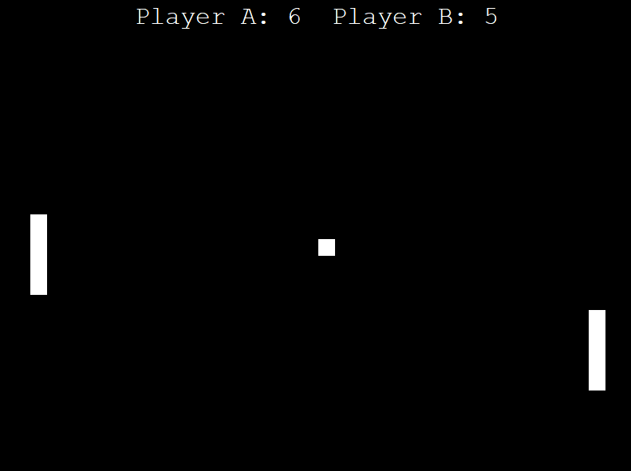

Here are some of the things I've worked on. Click on an image to be taken to the specific page on github to obtain the source files. If you would like to see the source codes that are private or more info in relation to my projects, please contact me. My information is on the home page.
-
Data Wrangling - Bitcoin's Price Chart

This task demonstrates my application of data wrangling using the cryptocurrency Bitcoin. It provides historical data for chart analytics to determine past trends and opportunity costs for investment.
-
Data Visualization using Pandas - Weather

This task demonstrates my knowledge in Python using the Pandas library to visualize data. It provides a convenient way of visualizing weather data from a CSV file.
-
Inventory Management System

Developed a comprehensive inventory management system to track stock levels, orders, and deliveries.
Technologies: Python, Django, JavaScript
Role: Full-Stack Developer
-
Online Banking System

Implemented an online banking system with features such as account management, transactions, and customer support.
Technologies: C#, .NET, SQL Server
Role: Backend Developer
-
Task Management App

Created a task management application for tracking personal and team tasks with a user-friendly interface.
Technologies: JavaScript, React, Node.js
Role: Frontend Developer
-
Pong Game
 I developed this classic game using python and the turtle graphics library for a fully functional, 2-player game and uses the "WS" and Arrow keys to give the players the ability to move their paddles and it keeps track of their scores with a sound for whenever the ball bounces on the walls.
Technologies:
 Python
Python
 JavaScript
JavaScript